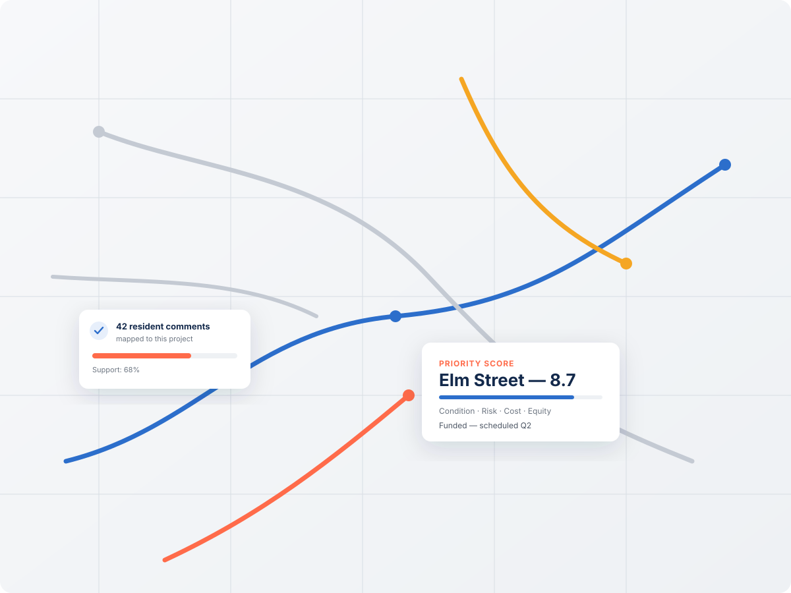
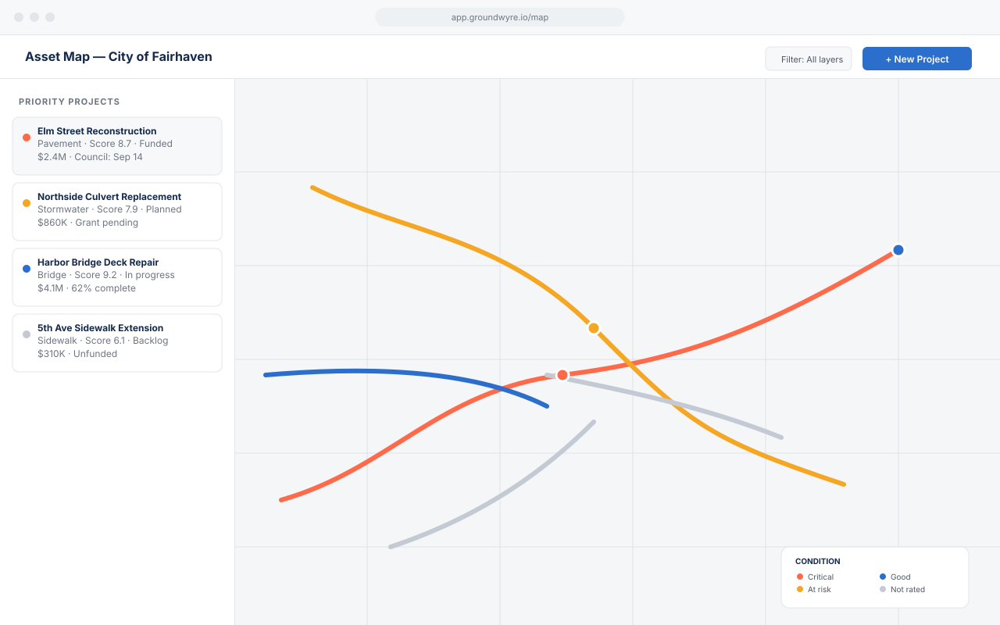
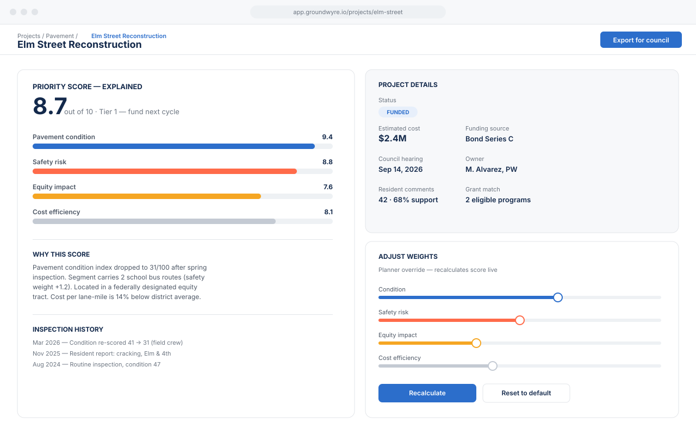
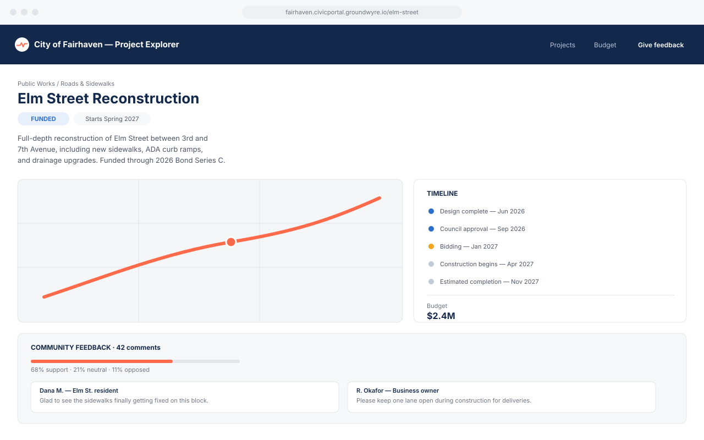
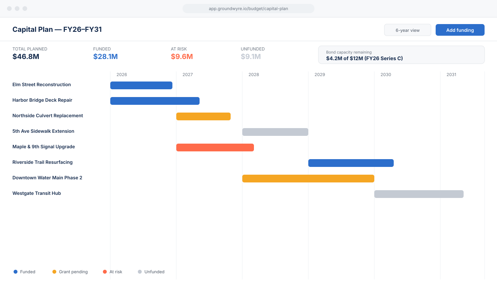

images/photos/aerial-highway.jpg
images/photos/paving-crew.jpg

images/photos/construction-equipment.jpg

Groundwyre pulls pavement scores, budgets, traffic data, and resident feedback into one place, uses AI to help you prioritize what actually needs to happen next, and builds the public case for it automatically.
Trusted by public works and planning teams in 40+ cities and counties.

A mid-sized city already collects pavement scores, traffic counts, budgets, and hundreds of resident complaints a year. What it doesn't have is a way to see all of it at once — or explain the decision before the vote.
Planning teams rebuild the same project record in four different tools every budget cycle.
When a council member asks "why this street and not that one," the answer lives in someone's head.
Comment cards and email threads pile up separately from the map and the budget that decide the outcome.
Groundwyre connects the four stages of infrastructure planning that used to live in separate tools.
Condition scores, inspections, and GIS layers stay current automatically.
AI ranks competing needs by condition, risk, cost, and equity — fully explainable.
Prioritized projects map directly onto bond capacity, grants, and multi-year budgets.
Council exports and resident-facing project pages generate themselves from live data.
Infrastructure teams currently work across GIS software, spreadsheets, work order systems, budgeting tools, and public meeting software just to plan a single project. Groundwyre unifies asset data, prioritization, budgeting, and public engagement into a single system of record.


Groundwyre uses AI to help planning teams prioritize hundreds of competing infrastructure needs, but every recommendation is explainable in plain language — because a city manager has to defend it to a council, not just trust it.
Infrastructure plans don't just need to be correct — they need to survive a public hearing. Groundwyre generates the visuals, timelines, and plain-language summaries planning teams need to present to councils and residents.


Resident feedback usually lives in email threads, comment cards, and meeting transcripts — disconnected from the planning process it's supposed to inform. Groundwyre turns engagement into structured input that sits alongside asset and budget data.
Used by planning & public works teams across the country
Every role touching a capital project gets a view built for their job — not a generic dashboard.
One defensible view of the capital plan, ready for council.
Prioritization grounded in real condition data, not instinct.
Traffic, safety, and engagement data — combined for grant applications.
Infrastructure readiness data, visible the moment a developer asks.
Every decision, score, and comment is retained and exportable — built for the scrutiny public infrastructure decisions require.
Independently audited controls for data handling, access, and availability.
Public-facing project pages meet accessibility standards out of the box.
30 minutes, your real GIS data, no slideware.